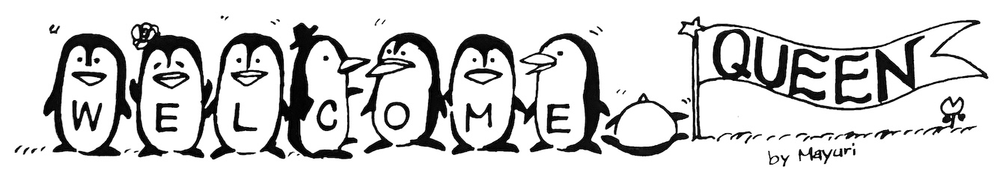
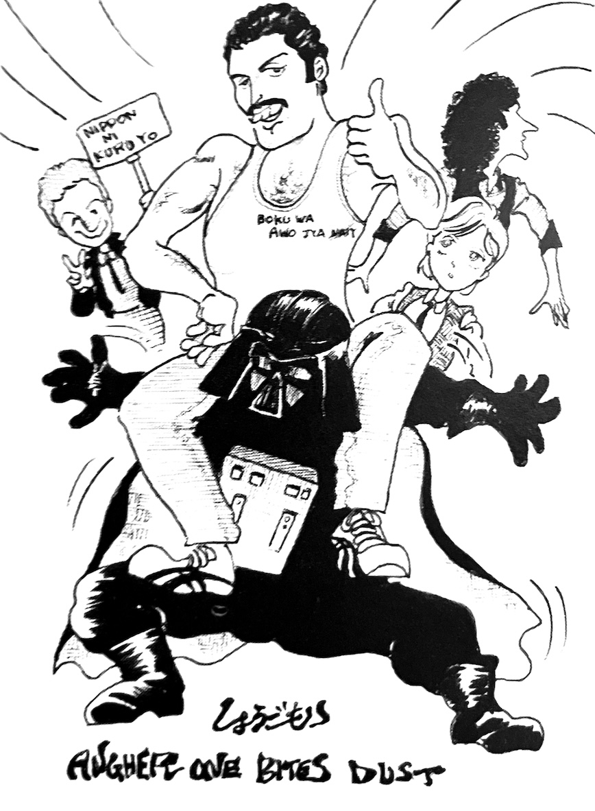

1981 Japanese Tour Anecdotes

• On the night of his arrival in Japan, Freddie complained of feeling unwell. Finding a doctor was difficult because it was the middle of the night, but thankfully one was located, much to everyone's relief. Freddie ended up receiving an injection with a huge needle, which looked to be quite painful.
• What Freddie was drinking onstage was lemonade with lots of honey. The liquid he threw into the audience was either mineral water or champagne.
• The blue Spaulding shoes Freddie wore onstage were bought in Japan for around ¥4800.
• Freddie was the last of the band members to leave Japan, planning to board a flight that was scheduled to leave Narita Airport at 10 PM. But he wouldn’t get on and came back to the terminal. When asked why, he said “Getting on a DC-10 is like committing suicide!” So he was changed to a different flight with a different type of aircraft, but that flight wasn’t scheduled to leave until 8 hours later. Until then, he was holed up in a VIP room at Narita. Apparently, DC-10s are involved in a lot of crashes, so it must’ve been incredibly difficult to ensure his safety.

• Brian's Japanese has improved. He speaks Japanese onstage and can read katakana as well. He's a diligent student, and whenever he had free time he was practicing with an interpreter.
•On his prior visit to Japan Brian bought Hakata dolls, and this time he wanted more as souvenirs. However, since they didn't play in Kyushu this time, he ordered them by phone from a Hakata doll shop while in Tokyo and had them shipped back to England. But this kind of defeats the purpose of a souvenir, don't you think?
• John visited discos so often he deserves a perfect attendance award. Brian and Roger also went to discos frequently, but not as much as John, and it seems the went for the atmosphere rather than to actually dance.
• Gary Numan also deserves an award for perfect attendance—he showed up everywhere! At concerts, in hotels, during his free time... he was supposedly in Japan for promo appearances, but we suspect his main goal was to see Queen shows.
• On this trip to Japan, Roger was the only one to bring his lady with him, Miss Dominique. The wives of the others apparently stayed home this time around. Rumor has it Miss Dominique and the other two wives were all classmates together at university [note from QIJ: I don't believe this is true]. Someone said that Miss Dominique was tasked with keeping an eye on the other three guys.